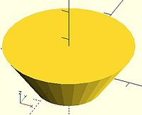
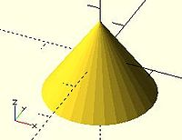

Creates a cylinder or cone centered about the z axis. When center is true, it is also centered vertically along the z axis.
Parameter names are optional if given in the order shown here. If a parameter is named, all following parameters must also be named.
NOTE: If r, d, d1 or d2 are used they must be named.
cylinder(h = height, r1 = BottomRadius, r2 = TopRadius, center = true/false);
defaults: cylinder(); yields: cylinder($fn = 0, $fa = 12, $fs = 2, h = 1, r1 = 1, r2 = 1, center = false);

equivalent scripts cylinder(h=15, r1=9.5, r2=19.5, center=false); cylinder( 15, 9.5, 19.5, false); cylinder( 15, 9.5, 19.5); cylinder( 15, 9.5, d2=39 ); cylinder( 15, d1=19, d2=39 ); cylinder( 15, d1=19, r2=19.5);

equivalent scripts cylinder(h=15, r1=10, r2=0, center=true); cylinder( 15, 10, 0, true); cylinder(h=15, d1=20, d2=0, center=true);
center = false
center = true
equivalent scripts cylinder(h=20, r=10, center=true); cylinder( 20, 10, 10,true); cylinder( 20, d=20, center=true); cylinder( 20,r1=10, d2=20, center=true); cylinder( 20,r1=10, d2=2*10, center=true);
Larger values of $fn create smoother, more circular, surfaces at the cost of longer rendering time. Some use medium values during development for the faster rendering, then change to a larger value for the final F6 rendering.
However, use of small values can produce some interesting non circular objects. A few examples are show here:
scripts for these examples cylinder(20,20,20,$fn=3); cylinder(20,20,00,$fn=4); cylinder(20,20,10,$fn=4);
Using cylinder() with difference() to place holes in objects creates undersized holes. This is because circular paths are approximated with polygons inscribed within in a circle. The points of the polygon are on the circle, but straight lines between are inside. To have all of the hole larger than the true circle, the polygon must lie wholly outside of the circle (circumscribed). Modules for circumscribed holes
Notes on accuracy Circle objects are approximated. The algorithm for doing this matters when you want 3d printed holes to be the right size. Current behavior is illustrated in a diagram . Discussion regarding optionally changing this behavior happening in a Pull Request
Created with the Personal Edition of HelpNDoc: Full-featured Documentation generator